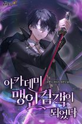

-

I Became The Academy's Blind Swordsman
A Blindfold That is Beyond Reason [Legendary]
-Experience Gained Increased by 500%
-Weakness Detection Skill lv.MAX
-Critical Hit Damage Increased by 300%
-Does not obstruct wearer's vision
…The truth is, I can see everything clearly.
-
Omniscient First-Person's Viewpoint
I, a mere con artist, was unjustly imprisoned in Tantalus,
Abyssal Prison meant for the most nefarious of criminals,
I met a regressor. But when I used my ability to read her mind,
I found out that I was fated to die in a year…
and that the world would end 10 years later.
-
Martial Cultivator
Chen Chao dreamt of becoming a powerful immortal cultivator,
flying on his sword and vanquishing enemies with daoist magic.
His hopes were dashed when he discovered that he had absolutely no talent for immortal cultivation.
-
I Became the Hero Who Banished the Protagonist
I banished the protagonist.
Shit. If only I had transmigrated a short while before.
-
I Became A Third-Rate Villain In The Hero Academy
I possessed a third-rate villain who died in every route of my favorite game.
But I want to live.
-
Getting a Technology System in Modern Day
For others it takes dying and reincarnating for them to get a system but what happens when you get one without dying?
Aron Michael is an average student set to graduate within a week, but he was expelled for a random reason.
-
Dungeon Battle Royale ~ Since I became a Demon King, I will aim for World Domination
One day every human on the world suddenly receives a mail claiming to enact the World Salvation Project. Half in doubt Kurosaki Shion,
a diligent university student and loner, follows the mail's instructions, becoming one of a million Demon Kings governing his very own Domain in the new world.
-
Abandoned by my Childhood Friend, I Became a War Hero
After experiencing heartbreak from being abandoned, he enlisted in the military.
And then, he became a war hero.
-
A Black Market LitRPG
Kyle woke up in a land of fantasy and magitech. The usual 'I died and woke up' bullshit, skip all that.
Except he used to be a crime lord, and society here is missing that extra kick.
-
Adopting Disaster
Jinhyuk is a person who likes to immerse himself in the role of the Villains but there is one villain which he particularly hates,
Reed Adeleheights Roton, the false final boss of the game.
The one who created the Seven Disasters.
The one who due to his inferiority complex led to his own doom.
The one who turned a cute innocent girl into the monstrous First Disaster codenamed Cosmo.
-
Solo Farming In The Tower
One day, a mysterious tower suddenly appeared in the city.
The people decided to call it a dungeon, and while it was full of rugged terrain and dangerous monsters,
it was also a land of opportunity, where countless treasures awaited.
-
Supreme Lord: I can extract everything!
In a world where the interstellar era has brought both promise and disappointment, Michael Fang dreams of becoming a Lord in the mysterious realm.
He longs to explore ancient ruins of fallen civilizations and build a territory loved and supported by his subjects.
-
The Misfit of Demon King Academy (WN)
After 2000 years has passed, the ruthless demon lord has just been reincarnated! But his aptitude at an academy for nurturing candidates for demon lords is, “Inept”!?
Having the capability to destroy humans, elementals, and gods, after a long period of countless wars and strife, Arnos the demon lord became sick and tired of all that and longed for a peaceful world, so he decided to reincarnate to the future.
However, what awaited him after his reincarnation is a world too used to peace that his descendants became too weak due to a huge weakening in magical powers.
-
Transmigrated Scoundrel's Exchange System
Han Cai had a very good life, as he was born into a wealthy merchant family. He had access to anything he wanted, and he was always safe, protected by guards at all times. His family was one of the wealthiest in the town, and no one dared to offend them.
All of this was going to change. Han Cai's father was taking him to the Sky Soaring sect, where he would begin his life as a cultivator.
His past life was filled with regret and loneliness, and he was grateful for the opportunity to start anew in the world.
But honestly, he knew he was a Scoundrel in his past life and will be one in this life too.
-
Why Should I Stop Being a Villain
In the midst of a ruined forest, due to the result of the clash between peak powerhouses, a body of a man lay. He was known as the 'Evilest Villain', the worst man ever born in humanity.His body was full of wounds with a spear piercing his heart. However, even in his final moments, he was calm and collected, with his usual cold face.
The only thing on his mind was, "Forgive me, I couldn't keep my promise to you."
He closed his eyes, ready to begin his eternal slumber in the darkness.
Suddenly, a blue light appeared, with ancient text that read, 'Do you want to turn back time, my child?'
He laughed and said yes.